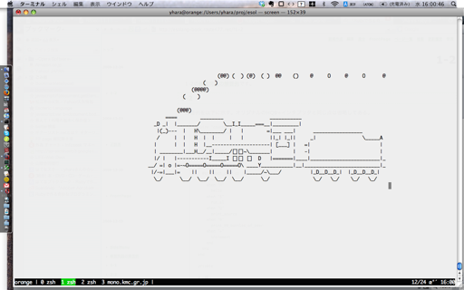

各章末の練習問題の解答例です。
回答例はこちら。
puts"Hello, world!"
以上で19バイト。現在のRubyの文法では、これが最短だろう。 (「ファイルに保存したら20バイトになったよ」という人は、末尾に余計な改行が付いているものと思われる。)
別解として、
$><<"Hello, world!"
というのもある。
「$>」は「$stdout」という組み込み変数の別名で、標準出力を表すIOオブジェクトだ。なので、「$> << "Hello, world!"」とするとIOクラスのインスタンスメソッド「<<」が呼び出され、「Hello, world!」という文字列が標準出力に出力されるというわけだ(細かいことを言うと、putsだと最後に改行が出力されるが、<<だと改行が出力されないという違いがある)。
解答例はこちら(281バイト)。あなたはこれよりも短くできただろうか？:-)
b=proc{|n,w|"#{n==0?'no more':n} bottle#{'s'unless n==1} of beer#{' on the wall'if w}"}
puts ["#{b[99,1]}, #{b[99,p]}.",(0..98).map{|n|["Take one down and pass it around, #{b[n,1]}.","","#{b[n,1].capitalize}, #{b[n,p]}."]}.reverse, "Go to the store and buy some more, #{b[99,1]}."]
あるプログラムをできるだけ少ないバイト数で書くという遊びは、一般に 「ショートコーディング」や「コードゴルフ」という名前で知られている。 1バイトでも短いコードを書いた人が勝ちというルールを、 少ない打数でゴール地点を目指すゴルフ競技になぞらえたわけだ。
ゴルフに興味を持った方は、「Code Golf」や「anarchy golf」 といったサイトに挑戦してみるといいだろう。 また、Rubyに関する記事を集めたWeb雑誌、「Rubyist Magazine」(通称るびま)でもゴルフについての記事が掲載されている。
回答例はこちら。
puts format(x="puts format(x=%p, x)", x)
一見何がどうなっているのか分からないと思うが、実際に実行して結果を確かめてほしい。「"」を出力するためにformatメソッドの「%p」というパターンを使っているのがポイントだ。%pを使うと、引数(この場合ならxだ)のinspectメソッドを呼んだ結果がその場所に埋め込まれる。
ちなみにformatと同じことを行うString#%という関数もある。 こちらを使うともう少し短くできる。
puts (x="puts (x=%p) %% x") % x
最後の「% x」を出力するために、文字列中では「%% x」と「%」を2つ書かないといけないことに注意。formatやString#%に渡す文字列の中では「%」は特殊な意味を持つので、「%」自身を出力するときは「%%」と書かなくてはならない。
回答例を以下に示す。オリジナルのHQ9+インタプリタと同じ点は省略してある。
require 'counter'
require 'rubygems'
require 'sl'
class HSQ9Plus
# (略)
def run
@src.each_char do |c|
case c
when "H"
hello
when "S"
run_sl
when "Q"
print_source
when "9"
print_99_bottles_of_beer
when "+"
increment
end
end
end
private
# (略)
def run_sl
SL.run!
end
# (略)
end
HSQ9Plus.new(ARGF.read).run
筆者が考えたHSQ9+言語では、S命令を実行すると画面にSLが走る。

ソースコードの全体は以下からダウンロードできる。
SLを走らせるために、pebbles-slというライブラリが必要だ。以下のようにしてインストールしてほしい。
$ gem install pebbles-sl
回答例は以下。
Brainf*ckの各命令を、以下のように置き換える。
> : else
< : while
+ : if
- : do
. : until
, : for
[ : then
] : end
すると、1-3で出てきた「Aという文字を出力するプログラム」は以下のようになる。
if if if if if if
then else if if if if if if if if if if while do end
else if if if if if until
筆者はこの言語を「Uncontrollable」と名付けた。「The Uncontrollable programming language」である。
英語で「control structure」と言えば制御構造、つまりifやwhileなどプログラムの実行を制御するもののことを言う。しかし、この言語では見た目こそ「if」や「while」などの制御構造に使われる単語が並んでいるが、その意味は「数値を1増やす」だったり「ポインタを左に移動する」だったりして、さっぱり制御する気がない。そこで「Uncontrollable」というわけだ。
実装は以下のようになる。
オリジナルのBrainf*ckと違い、命令が文字単位ではないので、 ソースコードを命令に区切るのにString#charsではなくString#splitを使っているのが違いだ。
無限に「A」という文字を表示しつづけるWhitespaceプログラムは以下のようになる。
分かりやすく書くと、こうだ。
[LF][Space][Space][Space][LF]
[Space][Space][Space][Tab][Space][Space][Space][Space][Space][Tab][LF]
[Tab][LF][Space][Space]
[LF][Space][LF][Space][LF]
それぞれの行が、Ruby風にいうと以下のような命令に対応している。
label "s"
push 65
char_out
jump "s"
label命令とjump命令が無限ループを実現していて、その間に挟まれた命令がループごとに実行される処理だ。 このWhitespaceプログラムは決して終わらないので、exit命令は使っていない。
回答例は以下。
+ + * +
* + . + + * +
* * + . + * + . + .
+ * + . + +
* + * * + . + *
+ . + + * + *
* + . + * + . + *
+ . + * + . + * + .
+ + * + *
* + .
回答例は以下。
[:push, 0] # 0
[:push, 1] # 0 1
[:label, 1] # ループの飛び先
[:dup] # 0 1 1
[:rotate] # 1 0 1
[:+] # 1 1
[:dup] # 1 1 1
[:num_out] # 1 1
[:push, 10] # 1 1 10
[:char_out] # 1 1 # 改行が出力される
[:dup] # 1 1 1
[:jump, 1] # 1 1
回答例は以下。
以下のような命令を使用している。
[:push, 0], # 0
[:push, 1], # 0 1
[:num_in], # ユーザが「10」を入力したとすると
# 0 1 10
[:label, 1],
[:rotate], # 10 0 1
[:dup], # 10 0 1 1
[:rotate], # 10 1 0 1
[:+], # 10 1 1
[:dup], # 10 1 1 1
[:num_out], # 10 1 1
[:push, 10],
[:char_out],
[:rotate], # 1 10 1
[:rotate], # 1 1 10
[:push, 1], # 1 1 10 1
[:-], # 1 1 9
[:dup], # 1 1 9 9
[:jump, 1] # 1 1 9
FizzBuzzプログラムを書くには、割り算の余りをとる操作が必要だ。というわけで、これを命令として追加してしまうのが簡単だろう。
「%」で割り算の余りを計算できるRubyに倣って、筆者は全角の「％」にこの操作を割り当てることにした。 優先度もRubyの「%」を真似て、かけ算や割り算と同じにすることにした。
％命令を実装するには、以下の2箇所を書き換えればいい。
*** bolic_intp.rb 2008-11-24 14:18:32.000000000 +0900
--- bolic_intp2.rb 2008-12-26 21:46:33.000000000 +0900
***************
*** 32,37 ****
--- 32,39 ----
eval(tree[1]) * eval(tree[2])
when :/
eval(tree[1]) / eval(tree[2])
+ when :%
+ eval(tree[1]) % eval(tree[2])
when :char_out
print eval(tree[1]).chr
nil
***************
*** 188,193 ****
--- 190,197 ----
[:*, left, parse_multiple]
elsif match?("÷")
[:/, left, parse_multiple]
+ elsif match?("％")
+ [:%, left, parse_multiple]
else
left
end
こうすると、以下のようなFizzBuzzプログラムを実行できるようになる。
Bolicにはwhile命令があるので、1から100まで繰り返すには、まず1が代入された変数を用意し、 ループを実行するごとにそれを1だけ増やして、101になったらループを抜ければいい。
ループを抜ける条件を思いだそう。Bolicのwhileループは、数値が0以外のとき処理を実行し、数値が0ならループを抜けるのだった。 ということは、「変数から101を引いた結果」をループの条件にすれば、 変数が101になったときにうまくループを抜けることができる。
BoilcにはRubyでいう「not」がない。
これを命令として追加してもいいが(与えられた数が0なら1を、0以外なら0を返す命令になるだろう)、 Bolicのif命令をうまく使うと、指定した条件が「成り立たなかったときだけ」ある処理を行うことができる。 つまり、if-then-elseのthen節に何も書かず、else節にだけ処理を書いておくのだ。
設問では「1つ以上の命令を追加し…」としか書いていないため、％命令に限らず、
など、いろいろな方法が考えられるだろう。Bolicはあなたの言語なのだから、どんな命令を追加するのも、あなたの思いのままだ。
以下は筆者の作成したEsoteric Languageである。